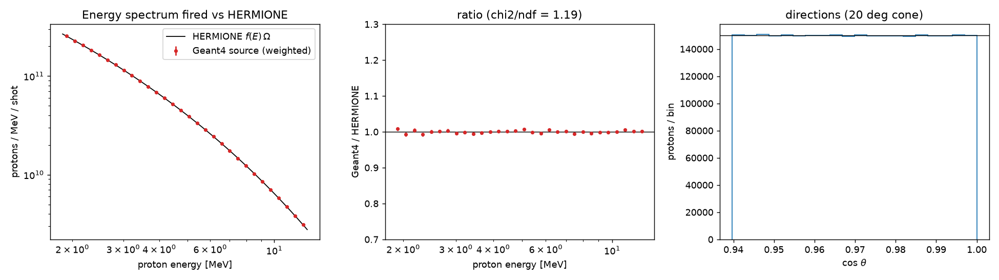

הזנב שעושה את העבודה
בפרק הזה נבנה את המקור של ldns: מאיפה כל פרוטון יוצא, באיזו אנרגיה ולאיזה כיוון, וכמה פרוטונים יש בירייה אחת של הלייזר. הספקטרום של הלייזר של 30 J יורד מהר עם האנרגיה, והנייטרונים באים דווקא מהזנב שלו.
אם יורים פרוטונים בדיוק לפי הספקטרום, החל מ-0.5 MeV, רק כ-5% מהם מעל 6 MeV. אבל בריצת ה-Be, 57% מהנייטרונים נוצרו מפרוטונים מעל 6 MeV. רוב זמן הריצה הולך על פרוטונים שלא עושים כלום.
זו דגימה עם משקלים (weighted sampling), וכך רצה ריצת ה-Be: /ldns/src/sampling flat, החל מ-1.85 MeV. בפרק 1 ראינו את התוצאה שלה, \(1.97\times10^{8} \pm 0.04\times10^{8}\) נייטרונים לירייה. בהנפשה השתמשנו בתפוקה סכמטית לכל אנרגיית פרוטון, מכוילת לתפוקה של הריצה, ולכן המספרים שלה קרובים לאמיתיים אבל לא זהים להם.
בסעיפים הבאים נבנה את המקור צעד אחר צעד: התותח, האנרגיה, הכיוון, המשקל, והבדיקה שהכול נכון.
תותח החלקיקים: פרוטון אחד בכל אירוע
ב-Geant4, מחולל החלקיקים הראשוניים (primary generator) יוצר את החלקיק הראשון של כל אירוע. ldns משתמש ב-G4ParticleGun: בכל קריאה הוא יורה חלקיק עם האנרגיה, הכיוון, המקום והזמן שקבענו לו. החלופה הכללית היא G4GeneralParticleSource (GPS), שמגדירים בה התפלגויות בפקודות מאקרו. ldns מגריל את הכול בעצמו, בקוד.
אלה השורות ב-src/PrimaryGeneratorAction.cc שמכינות את הפרוטון כשהמקור הוא ספקטרום:
fGun->SetParticleEnergy(src->SampleEnergy(w));
fGun->SetParticlePosition(src->Position());
fGun->SetParticleTime(0.);
// uniform in solid angle inside the cone: cos(theta) ~ U[cos(theta_max), 1]
const G4double cosMax = std::cos(src->HalfAngle());
cosT = 1. - G4UniformRand() * (1. - cosMax);
const G4double sinT = std::sqrt(std::max(0., 1. - cosT * cosT));
const G4double phi = twopi * G4UniformRand();
fGun->SetParticleMomentumDirection(G4ThreeVector(sinT * std::cos(phi), sinT * std::sin(phi), cosT));
האנרגיה באה מ-SampleEnergy, שגם קובע את המשקל w. הכיוון מוגרל בשלוש שורות, והמקום הוא נקודת המקור. בהנפשה, מבט מהצד: המקור, קונוס של 20°, וממיר ה-Be.
אירוע ב-ldns הוא פרוטון אחד וכל מה שהוא יוצר. הנרמול לירייה נעשה רק בסוף: כל אירוע בריצת ה-Be מייצג \(1.47\times10^{5}\) פרוטונים של הירייה. בהמשך אותה פונקציה, הקוד קובע את המשקל של האירוע:
fGun->GeneratePrimaryVertex(event); // statistical weight: inherited by every secondary of this event event->GetPrimaryVertex()->SetWeight(w);
המשקל של הנקודה הראשונית עובר לפרוטון, וכל חלקיק משני יורש אותו מההורה. זה ה-w שבכל שורה בטבלאות של ldns.
להגריל אנרגיה מטבלה
המקור קורא את הספקטרום מקובץ של HERMIONE: שתי עמודות, האנרגיה ב-MeV ו-\(f(E) = dN/dE\,d\Omega\), פרוטונים ל-MeV ולסטרדיאן בירייה. אלה השורות הראשונות של הקובץ של ריצת ה-Be:
# HERMIONE point run: E_L = 30 J, tau = 300 fs, lambda = 1.056 um, R = 5.80 um, Al 10 um, L_preplasma = 0.012 um (fitted to Zimmer 13 MeV) # T_h = 0.782 MeV, Ep max = 13.00 MeV; spectrum cut at Ep max; analytic Eq. (12) with A from the model # protons above 0.5 MeV in the 20 deg half-angle cone: 1.278e+12, carrying 411.2 mJ # E(MeV);dNdE/MeV/sr 0.500;3.852124e+12 0.510;3.771487e+12
הערכים בקובץ הולכים כמו \(e^{-\sqrt{2E/T}}/\sqrt{2ET}\), עם \(T = 0.782\) MeV מהשורה השנייה. בהנפשות של הפרק נשתמש בנוסחה הזאת, והיא נותנת את המספרים של הריצה.
איך מגרילים אנרגיה לפי טבלה כזאת? מחשבים את הפונקציה המצטברת (cumulative), \(F(E)\): החלק של הפרוטונים שמתחת ל-\(E\). מגרילים מספר אחיד \(u\) בין 0 ל-1, ומחפשים את ה-\(E\) שבו \(F(E) = u\).
זו דגימה בהיפוך של הפונקציה המצטברת (inverse-CDF sampling). כך עובד המצב analog ב-src/SourceSpectrum.cc, עם \(F\) שמחושבת פעם אחת בתחילת הריצה:
// analog: invert the piecewise-linear CDF exactly G4double target = G4UniformRand() * fIntegral; auto it = std::upper_bound(fCdf.begin(), fCdf.end(), target);
השיטה מדויקת, אבל היא עושה בדיוק את מה שראינו בפתיחה: היא יורה איפה שהספקטרום גבוה, לא איפה שהנייטרונים נולדים.
הפונקציה המצטברת היא כמו סרגל שבו כל פרוטון תופס אותו אורך. אנרגיות צפופות תופסות הרבה סרגל, ולכן חץ אקראי פוגע בהן הרבה.
כיוונים בקונוס, ופרוטונים לירייה
HERMIONE נותן את הספקטרום לסטרדיאן, בהנחה שהפרוטונים יוצאים באופן איזוטרופי בתוך קונוס של 20°. איזוטרופי אומר: כל זווית מרחבית (solid angle) מקבלת אותו מספר פרוטונים. בקוד ראינו את הדרך: \(\cos\theta\) אחיד בין \(\cos\theta_{max}\) ל-1, ו-\(\phi\) אחיד.
בהנפשה שתי דרכים להגריל כיוון, כפי שהן נראות על הפאה הקדמית של הממיר, 45 mm מהמקור: מימין \(\cos\theta\) אחיד, ומשמאל \(\theta\) עצמה אחידה. העיגול המקווקו הוא שפת הקונוס, ברדיוס 16.4 mm.
\(\cos\theta\) אחיד הוא אחיד בזווית מרחבית, כי \(d\Omega = 2\pi\sin\theta\,d\theta = 2\pi\,|d(\cos\theta)|\). הזווית המרחבית של הקונוס כולו היא \(\Omega = 2\pi(1-\cos\theta_{max})\), ול-20° היא 0.379 sr. מכאן מספר הפרוטונים לירייה: \(N_{shot} = \Omega\int f\,dE\). זה מה ש-ldns מדפיס כשהמקור מוכן, בלוג של ריצת ה-Be:
================ LDNS proton source ================ proton spectrum 'data/E30J_M2_2.5_d10um_L0.012um_spectrum.txt' 1.85-13 MeV, half-angle 20 deg, sampling flat table points used : 1116 Integral f dE : 1.16541e+12 protons/sr protons per shot (cone): 4.416e+11 mean proton energy : 3.93697 MeV energy in cone / shot : 0.278548 J ====================================================
\(\int f\,dE\) הוא \(1.165\times10^{12}\) פרוטונים לסטרדיאן, וכפול 0.379 sr יוצאים \(4.42\times10^{11}\) פרוטונים לירייה (תרגיל 2). האנרגיה הממוצעת של הפרוטונים שנורים היא 3.94 MeV.
משקלים: יותר פרוטונים בזנב, אותה תשובה
עכשיו נחזור לפתיחה, הפעם מבפנים. בדגימה flat כל אנרגיה בין \(E_{min}\) ל-\(E_{max}\) נורית באותה הסתברות, ולכל פרוטון יש משקל \(w = f(E)(E_{max}-E_{min})/\int f\,dE\). פרוטון של 2 MeV, מהאזור הצפוף, מקבל משקל גדול, ופרוטון של 12 MeV משקל קטן.
בהנפשה \(2\times10^{4}\) פרוטונים כאלה. למעלה ההיסטוגרמה של האנרגיות שנורו והמשקל \(w(E)\), ולמטה אותם פרוטונים, כל אחד עם המשקל שלו.
\(\langle w\rangle = 1\) אומר שכל ספירה נשארת לפרוטון מקור: סכום המשקלים חלקי מספר האירועים הוא בדיוק מה שהיה יוצא בדגימה לפי הספקטרום, בממוצע. רק הפיזור משתנה, והוא קטן כשיורים יותר איפה שהתוצאה נוצרת. זו דגימת חשיבות (importance sampling) בצורה הפשוטה שלה. כך זה נראה ב-src/SourceSpectrum.cc:
if (fSampling == Sampling::kFlat) {
G4double e = fEmin + G4UniformRand() * (fEmax - fEmin);
weight = Interp(e) / fIntegral * (fEmax - fEmin) / MeV;
return e;
}
ולמה המשקל הממוצע בטבלה leak של ריצת ה-Be הוא רק 0.219? כי הנייטרונים באים מהזנב, איפה ש-\(w\) קטן: 6126 שורות, וסכום משקלים של 1341. גם בצעצוע של ההנפשה יוצא ערך קרוב, כ-0.2.
זה כמו סקר שמראיין יותר אנשים בעיר קטנה, ונותן לכל אחד מהם משקל קטן יותר. התוצאה הארצית לא משתנה, אבל על העיר הקטנה יודעים הרבה יותר.
לבדוק את הקלט לפני שמאמינים לתוצאה
מקור עם משקלים הוא מקום טוב לטעויות: קובץ לא נכון, Emax לא נכון, משקל שלא מנורמל. לכן ldns שומר ברמת פלט 2 את הטבלה primary, עם האנרגיה, \(\cos\theta\) והמשקל של כל פרוטון שנורה, והסקריפט check_inputs.py משווה אותה לקובץ.
הבדיקה המרכזית היא ההיסטוגרמה עם המשקלים מול הספקטרום, ב-30 תאים, עם \(\chi^2\). בהנפשה \(3\times10^{5}\) פרוטונים, פי 10 פחות מבריצה האמיתית.
אלה השורות שהבדיקה הדפיסה על ריצת ה-Be, מתוך run_spectra.log:
4. Protons actually fired (ntuple 'primary') [PASS] 3000000 primaries recorded for 3000000 events [PASS] mean weight 0.9997 +- 0.0008 (must be 1 within errors) [PASS] all energies inside [1.85, 13] MeV: min 1.850, max 13.000 [PASS] weighted energy spectrum vs HERMIONE: chi2/ndf = 35.7/30 = 1.19 [PASS] all directions inside the 20 deg cone [PASS] cos(theta) uniform in cone: chi2/ndf = 19.4/20 5. Geometry [PASS] cone radius at front face 16.4 mm vs converter radius 22 mm
המשקל הממוצע יצא \(0.9997 \pm 0.0008\), כלומר 1 בתוך השגיאה. השורה האחרונה בודקת שהקונוס כולו נכנס לממיר: ברדיוס 16.4 mm הוא קטן מהדיסקה של 22 mm, ואף פרוטון לא מחטיא. לצד השורות הבדיקה שומרת תמונה:

הנוסחאות שהרווחנו
כל מה שכאן כבר רץ על המסך. עכשיו רק נותנים לזה שמות, שורה לכל סמל.
קונוס ופרוטונים לירייה
| סמל | משמעות | יחידה |
|---|---|---|
| \(\theta_{max}\) | חצי זווית הקונוס, הפקודה halfAngle. | deg |
| \(\Omega\) | הזווית המרחבית של הקונוס. | sr |
| \(f(E)\) | הספקטרום מהקובץ: פרוטונים ל-MeV ולסטרדיאן בירייה. | MeV⁻¹ sr⁻¹ |
| \(E_{min},\ E_{max}\) | הטווח שנורה. \(E_{max}\) הוא ה-cut-off. | MeV |
| \(N_{shot}\) | פרוטונים בירייה, בתוך הקונוס ובטווח. | |
| \(u\) | מספר אקראי אחיד בין 0 ל-1. |
מה הנוסחה לא אומרת: שהפרוטונים באמת איזוטרופיים בקונוס. זו הנחה של HERMIONE, ובמציאות פרוטונים אנרגטיים יוצאים בזווית צרה יותר. כל עוד הממיר תופס את כל הקונוס, ההנחה לא משנה את המספר הכולל.
דגימה ומשקלים
| סמל | משמעות | יחידה |
|---|---|---|
| \(F(E)\) | הפונקציה המצטברת: החלק של הפרוטונים מתחת ל-\(E\). | |
| \(w\) | המשקל של פרוטון בדגימה flat. ב-analog הוא 1. | |
| \(x_i\) | סכום המשקלים של מה שנספר באירוע \(i\), למשל נייטרונים שיצאו. | |
| \(\bar x\) | הממוצע על \(N\) אירועים: התוצאה לפרוטון מקור. | |
| \(\sigma_{\bar x}\) | השגיאה שלו, מהפיזור בין האירועים. |
מה הנוסחה לא אומרת: שמשקלים תמיד מקטינים את השגיאה. הם מקטינים אותה רק כשהם שולחים יותר פרוטונים לאן שהתוצאה נוצרת. דגימה flat החל מ-0.5 MeV הייתה מבזבזת חלק גדול מהפרוטונים מתחת לכל סף.
המקור של ריצת ה-Be:
| ספקטרום | HERMIONE, 30 J, M² = 2.5 |
|---|---|
| טווח | 1.85-13 MeV |
| קונוס | 20°, Ω = 0.379 sr |
| דגימה | flat |
| ∫f dE | 1.165×10¹² /sr |
| פרוטונים לירייה | 4.42×10¹¹ |
| מעל 0.5 MeV | 1.28×10¹² |
| אנרגיה ממוצעת | 3.94 MeV |
| אירועים | 3×10⁶ |
| משקל ממוצע | 0.9997 ± 0.0008 |
כל אירוע מייצג \(4.42\times10^{11}/3\times10^{6} = 1.47\times10^{5}\) פרוטונים של הירייה.
מעבדת המקור
כל הכפתורים של המקור במקום אחד, עם שורות המאקרו שהם כותבים. השיפוע \(T\) משנה את צורת הספקטרום: מחוץ ל-0.78 MeV זה כבר ספקטרום של צעצוע, לא הקובץ של הריצה. כמה דברים שכדאי לבדוק:
- לעבור בין
analogל-flat: איפה נורים רוב הפרוטונים בכל אחד? - להוריד את Emin ל-0.5 MeV: פי כמה גדל מספר הפרוטונים לירייה, ואיזה חלק מהם מעל הסף של ⁹Be?
- להקטין את הקונוס ל-10°: מה קורה למספר הפרוטונים לירייה, ומה לאנרגיה הממוצעת?
- להקטין את \(T\): איך משתנה החלק שמעל הסף?
אתגר: לכוון את המקור
בכל שלב מקור מטרה, עם מספר פרוטונים לירייה ואנרגיה ממוצעת, ואנחנו מכוונים את הסליידרים עד ששניהם מתאימים: מספר הפרוטונים בטווח של 3%, והאנרגיה הממוצעת בטווח של 2%. בשלב הראשון רק הקונוס, בשני גם Emin, ובשלישי גם Emax.
בדיקה ראשונה שמצליחה שווה 3 נקודות, שנייה 2, ואחר כך 1. הכוכבים נקבעים מסכום הנקודות, והמטרות משתנות בכל סיבוב.
מלכודות
ארבע טעויות על המקור. כל אחת מהן נותנת ריצה שנראית תקינה ותוצאה שלא מתאימה לירייה האמיתית.
תרגילים
חמישה חישובים על המקור של ריצת ה-Be. כדאי לנסות לבד, ולפתוח רמז רק כשנתקעים.
בוחן
חמש שאלות על הפרק ושתיים לחזרה על פרקים 1 ו-2. הציון הטוב ביותר נשמר, ואפשר לנסות שוב כמה פעמים שרוצים.
כרטיס כיס
המקור על כף היד
G4ParticleGun(1). הנרמול לירייה בסוף: כפול \(N_{shot}\), חלקי מספר האירועים.analog: \(E = F^{-1}(u)\). flat: \(E\) אחיד ו-\(w = f(E)(E_{max}-E_{min})/\int f\), עם \(\langle w\rangle = 1\).check_inputs.py: \(\chi^2/\text{ndf} \approx 1\), משקל ממוצע 1 בתוך השגיאה, כל הכיוונים בקונוס, הקונוס בתוך הממיר./ldns/src/mode spectrum, /ldns/src/Emin 1.85 MeV, /ldns/src/Emax 13.0 MeV, /ldns/src/halfAngle 20 deg, /ldns/src/sampling flat.